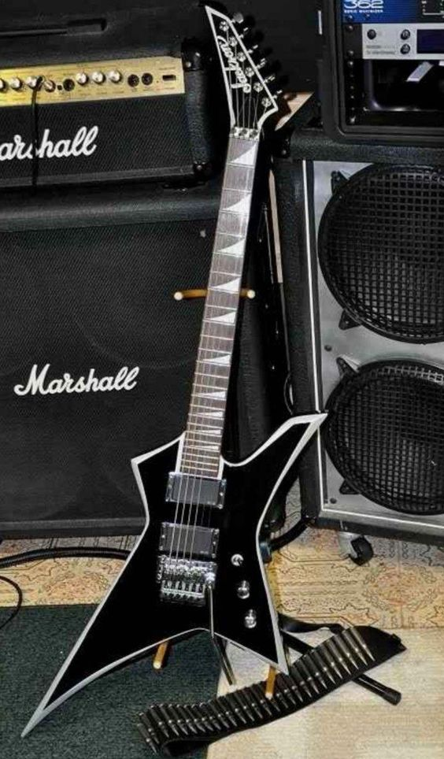

Guitarras mais epicas

Em resumo, a guitarra Explorer Jackson Floyd Rose é uma máquina poderosa
projetada para guitarristas que buscam tons pesados
Uma característica proeminente desta guitarra é o sistema de tremolo Floyd Rose
características principais
To sumindo porra